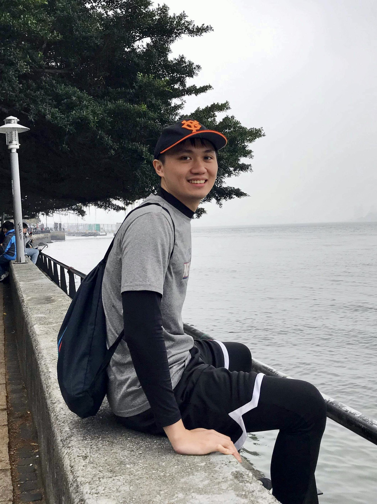
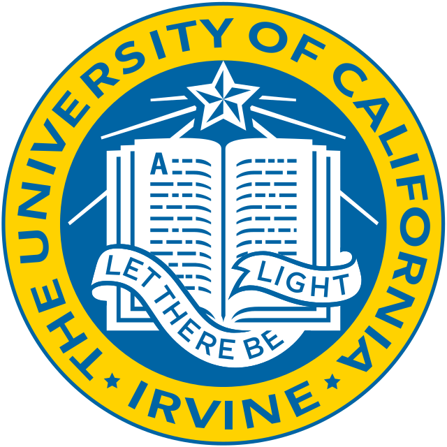

Hao-Hsiang Hsiao
PhD student in ECE at GT
Email: thsiao@gatech.edu
Welcome to my personal website!
I am a first-year Ph.D. student at the Georgia Tech Computer-aided Design Lab (GTCAD), where I am fortunate to have the opportunity to conduct research under the advise of Prof. Sung Kyu Lim.
I received my B.S. in Electrical Engineering from National Taiwan University and my M.S. in Electrical Engineering and Computer Science from the University of California, Irvine.
My research interests primarily revolve around utilizing machine learning and reinforcement learning techniques to improve the Electronic Design Automation (EDA) process for both 2D and 3D Integrated Circuits.
Through this website, I aim to share my research journey, accomplishments, and future aspirations with you.
Feel free to browse through my portfolio and connect with me for any collaborations or inquiries. Thank you for visiting my website!
Experience
Graduate Research Assistant at Georgia Institue of Technology
-
Design space optimization using reinforcement learning.
Research Intern at Synopsys Inc., Moutainview, CA
- Built and deployed a reinforcement learning flow AI agent to optimize placement flow
- Contributed production code to Integrated Circuit Compiler II (ICC2) in C++ and Python.

Teaching Assistant at University of California, Irvine
-
EECS 12 LEC A: INTRO PROGRAMMING
Machine Leaning Intern at Augentix Inc., Hsinchu
-
Developed and optimized face recognition algorithms for camera SoCs
- Designed and deployed a distributed training environment on AWS for training computer vision models
- Developed and implemented network compression techniques, including knowledge distillation and network pruning, to reduce computational and memory consumption
Publications
DREAM-GAN: Advancing DREAMPlace towards Commercial-Quality using Generative Adversarial Learning
Yi-Chen Lu, Haoxing Ren, Hao-Hsiang Hsiao, and Sung Kyu Lim.27th ACM International Symposium on Physical Design (ISPD), 2023.
[Link]
FastTuner: Transferable Physical Design Parameter Optimization using Fast Reinforcement Learning
Hao-Hsiang Hsiao, Yi-Chen Lu, Pruek Vanna-Iampikul, and Sung Kyu Lim28th ACM International Symposium on Physical Design (ISPD), 2024.